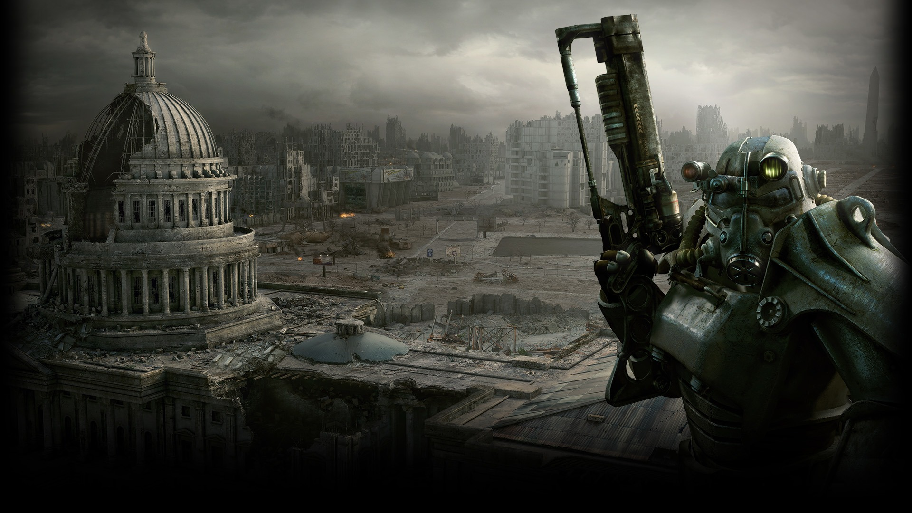

Vault Aftermaths and Legacies
When the vault doors first sealed, most residents thought they were safe from the bombs. Life in a vault wasn't always the sanctuary people were promised. In reality, many were stepping straight into twisted social experiments designed by Vault-Tec. Some vaults descended into chaos almost immediately, others limped along for decades before collapsing, and a rare few managed to build real communities. The aftermath of these experiments left behind everything from thriving towns to ghostly tombs, overrun with mutants, plants, clones, or worse — reminders that in the Fallout universe, survival often came with a cruel twist.
Vault 11 (Fallout: New Vegas)
Experiment: Forced residents to sacrifice one Overseer per year or everyone died.
Aftermath: Everyone eventually refused to comply — choosing mass death instead of murder. Only one survivor left to tell the tale.
Vault 21 (Fallout: New Vegas)
Experiment: All conflicts settled by gambling.
Aftermath: Mr. House took over after the war, filled most of it with concrete, and turned the rest into a casino hotel. Jackpot?
Vault 22 (Fallout: New Vegas)
Experiment: Vault-Tec researched aggressive plant growth.
Aftermath: Nature took over — spores infected and killed residents, turning the vault into a green nightmare crawling with spore monsters.
Vault 81 (Fallout 4)
Experiment: Test cures for diseases by secretly infecting residents.
Aftermath: Scientists sealed themselves off before releasing any infections. The vault grew into one of the rare thriving, “normal” communities.
Vault 87 (Fallout 3)
Experiment: Forced Evolutionary Virus (FEV) testing.
Aftermath: Everyone became grotesque super mutants. By the time of Fallout 3, it's a nightmare factory of mutants and little else.
Vault 95 (Fallout 4)
Experiment: Rehab center for chem addicts — with a stash hidden to trigger relapse.
Aftermath: Vault tore itself apart in chaos and overdoses. Later taken over by raiders, still steeped in chems.
Vault 108 (Fallout 3)
Experiment: Filled with unstable clones of one guy — Gary.
Aftermath: The “Garys” killed everyone else, leaving the vault echoing with their one-word vocabulary: “Gary!”
Vault 111 (Fallout 4)
Experiment: Cryo-freezing unsuspecting residents.
Aftermath: All except the Sole Survivor died in stasis. Became a frozen tomb and the Sole Survivor's origin story.
Vault 112 (Fallout 3)
Experiment: VR pods controlled by Dr. Braun.
Aftermath: Residents were trapped for centuries in sadistic simulations. Braun's playground until the Lone Wanderer intervened.
